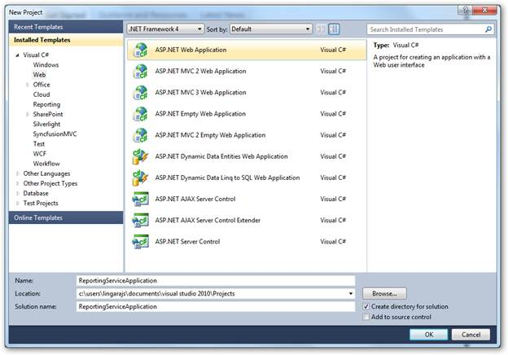
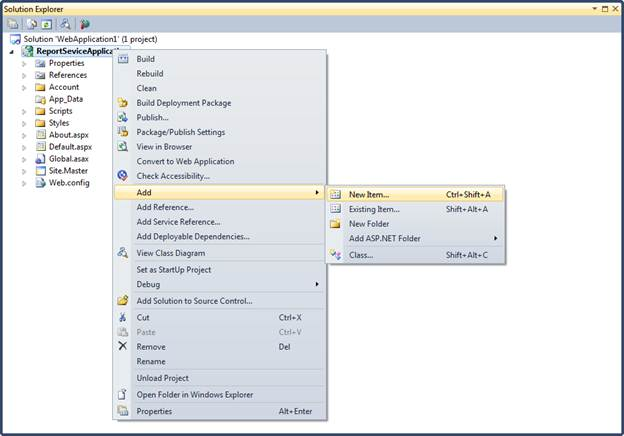
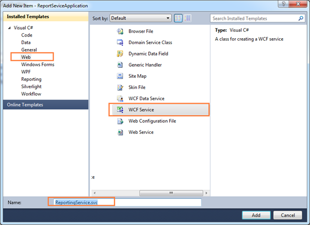
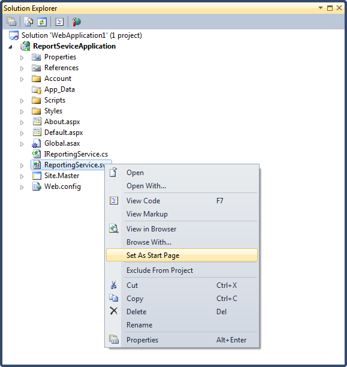
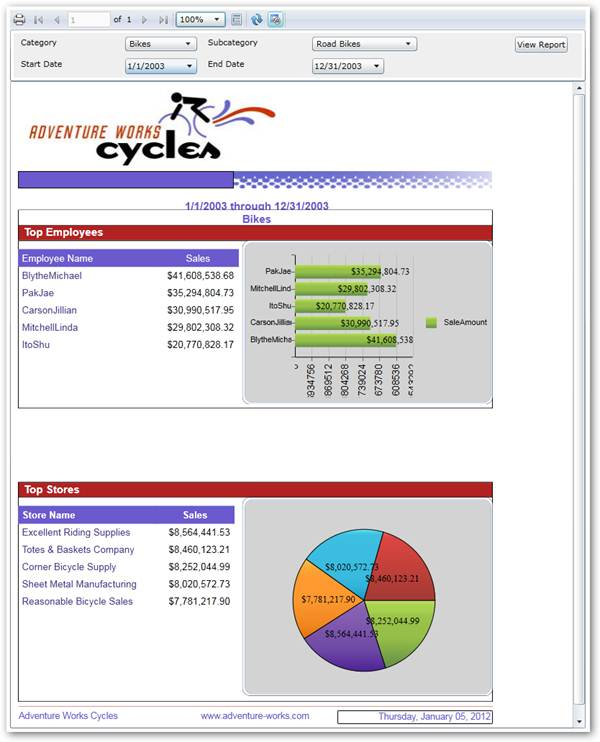

You can also show SSRS reports in Report Viewer using the following steps.
1. Create a new web application in VS2010.

Figure 30: Adding New Application
2. On the Solution Explorer, right-click References folder, and then click Add Reference.

Figure 31: Adding References
 Note: The added references will appear under the
References folder
Note: The added references will appear under the
References folder

Figure 32: Added References
3. To add a new WCF service file in the web application, right-click on the newly added web application under Solution Explorer dialog.

Figure 33: Adding New Item
4. Click Add and select New Item. The Add New Item dialog will open.

Figure 34: Adding New WCF Service
5. Click Web under Visual C#.
6. Click WCF Service, and then click Add.
7. Update the following changes in the auto generated WCF service file.
using System; using System.Collections.Generic; using System.Linq; using System.Runtime.Serialization; using System.ServiceModel; using System.Text; namespace ReportingServiceApplication { public class ReportingService : Syncfusion.Reports.Server.ReportService { }} |
Note: The added WCF service file will appear under
the created web application

Figure 35: Set As Start Page option in Solution Explorer
8. Right-click on the newly added WCF service file and select Set As Start Page.
9. Run the service application. The service information is displayed.

Figure 36: Created Service
10. Create a new Silverlight application in VS2010.
11. Add Report Viewer and related references to the newly created Silverlight application.
12. To load SSRS report from a SQL Reporting Server to Report Viewer, initialize ReportViewer control, and set the ReportPath and the ReportingServiceUrl.
public partial class MainPage : UserControl {public MainPage() { InitializeComponent(); // ReportViewer control initialization Syncfusion.Windows.Reports.Viewer.ReportViewer reportViewer1 = new Syncf usion.Windows.Reports.Viewer.ReportViewer(); // Set ProcessingMode for ReportViewer. To load and process the DataSour ce information from serverreportViewer1.ProcessingMode = Syncfusion.Windows.Reports.Viewer.Process ingMode.Remote; // SQL ReportingService url. reportViewer1.ReportServerUrl = @"http://<<SERVER NAME>>/ReportServer"; // SQL ReportingService hosted Reportpath. reportViewer1.ReportPath =@"/MSFT Reports/Product Line Sales"; // Set ReportServer credential to access ReportingServer. reportViewer1.ReportServerCredential = new System.Net.NetworkCredential( "username", "passowrd", "domain"); // Set ReportServiceUrl to retrive data from hosted service reportViewer1.ReportServiceURL = @"http://localhost:50774/ReportingServi ce.svc"; // Add ReportViewer in MainWindow grid this.LayoutRoot.Children.Add(reportViewer1); this.Loaded += (sender, arg) => {// To Render the Report in ReportViewer. reportViewer1.RefreshReport(); }; } } |
13. Run the application. The following output displays.

Figure 37: ReportViewer with SSRS reports